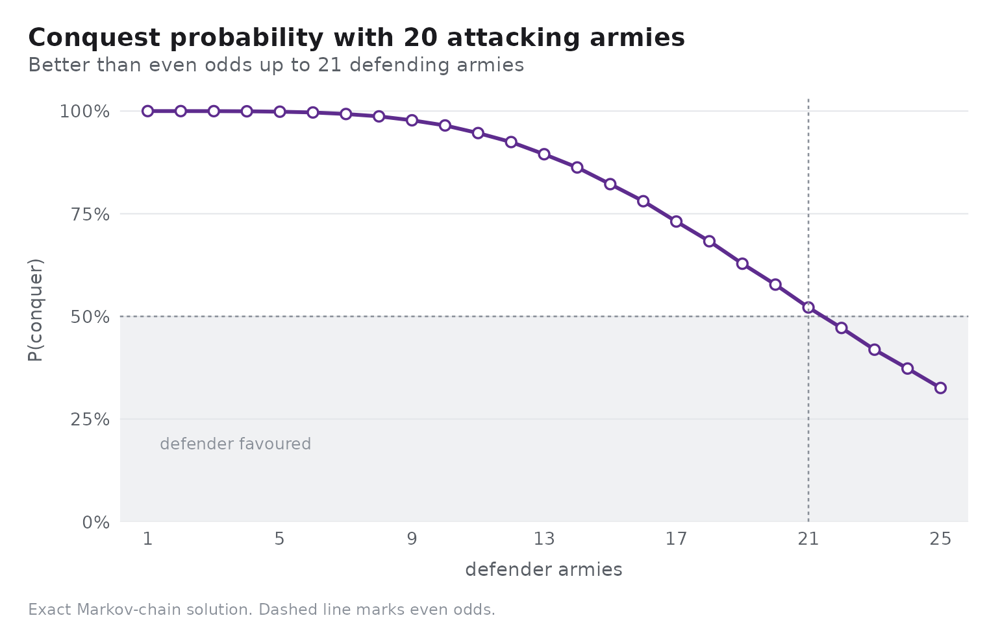
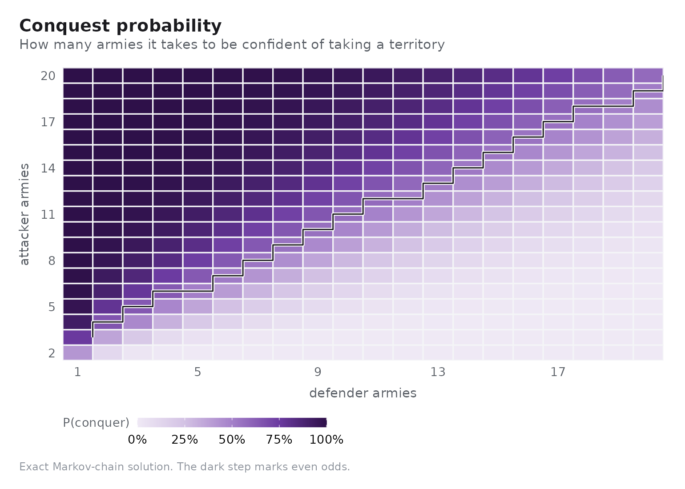
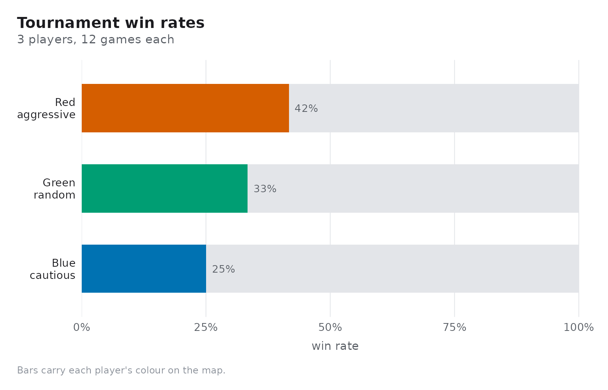

Risk looks like a game of luck. It is, but the luck is completely characterised: every roll of the dice has an exact distribution, every battle is an absorbing Markov chain, and both can be written down. This article walks from one throw of the dice up to whole-game win rates.
One throw of the dice
There are 6^n_att * 6^n_def equally likely combinations,
few enough to enumerate exhaustively. rk_duel_dist() does
exactly that.
rk_duel_dist(3, 2)
#> # A tibble: 3 × 5
#> n_att n_def att_loss def_loss p
#> <int> <int> <int> <int> <dbl>
#> 1 3 2 0 2 0.372
#> 2 3 2 1 1 0.336
#> 3 3 2 2 0 0.293Three attacking dice against two defending dice is the standard case, and it is worth memorising: the attacker loses nothing about 37% of the time, trades one for one about 34% of the time, and loses two about 29% of the time.
Comparing every legal dice pairing shows how much the extra dice are worth:
pairings <- expand.grid(n_att = 1:3, n_def = 1:2)
odds <- do.call(
rbind,
Map(rk_duel_odds, pairings$n_att, pairings$n_def)
)
odds[order(odds$n_def, odds$n_att), ]
#> # A tibble: 6 × 8
#> n_att n_def e_att_loss e_def_loss sd_loss p_att_wins_all p_def_wins_all
#> <int> <int> <dbl> <dbl> <dbl> <dbl> <dbl>
#> 1 1 1 0.583 0.417 0.493 0.417 0.583
#> 2 2 1 0.421 0.579 0.494 0.579 0.421
#> 3 3 1 0.340 0.660 0.474 0.660 0.340
#> 4 1 2 0.745 0.255 0.436 0.255 0.745
#> 5 2 2 1.22 0.779 0.792 0.228 0.448
#> 6 3 2 0.921 1.08 0.811 0.372 0.293
#> # ℹ 1 more variable: p_split <dbl>Two lessons fall out. Rolling three dice instead of one roughly halves the attacker’s expected loss, so never attack with fewer armies than you need for three dice. And the defender’s second die is worth more than the attacker’s third: with two defending dice the attacker loses more armies than the defender in every pairing.
The whole battle
A battle repeats the duel until one side runs out. Because each duel
removes a fixed number of armies, the process is an absorbing Markov
chain over states (attacker armies, defender armies) —
which rk_battle_odds(method = "exact") solves directly.
rk_battle_odds(10, 8, method = "exact")
#> # A tibble: 1 × 7
#> att_armies def_armies method n p_conquer e_att_survivors e_def_survivors
#> <int> <int> <chr> <int> <dbl> <dbl> <dbl>
#> 1 10 8 exact NA 0.646 4.05 1.23The Monte Carlo estimate converges to it:
set.seed(1)
mc <- do.call(rbind, lapply(
c(100, 1000, 10000),
function(n) rk_battle_odds(10, 8, n = n)
))
mc$exact <- rk_battle_odds(10, 8, method = "exact")$p_conquer
mc[, c("n", "p_conquer", "exact")]
#> # A tibble: 3 × 3
#> n p_conquer exact
#> <int> <dbl> <dbl>
#> 1 100 0.56 0.646
#> 2 1000 0.642 0.646
#> 3 10000 0.651 0.646Holding the attacker fixed and varying the defender traces the conquest curve:
rk_plot_conquest(20, def_range = 1:25, method = "exact")
The crossing point is the number to remember: an attacker needs roughly a 5-to-4 advantage for even odds, and about a 3-to-2 advantage to be comfortable.
odds_grid <- rk_odds_table(att_range = 2:20, def_range = 1:20)
even <- do.call(rbind, lapply(split(odds_grid, odds_grid$def_armies), function(d) {
win <- d[d$p_conquer >= 0.5, ]
if (nrow(win) == 0) return(NULL)
win[1, c("def_armies", "att_armies", "p_conquer")]
}))
head(even, 10)
#> # A tibble: 10 × 3
#> def_armies att_armies p_conquer
#> <int> <int> <dbl>
#> 1 1 3 0.754
#> 2 2 4 0.656
#> 3 3 5 0.642
#> 4 4 6 0.638
#> 5 5 6 0.506
#> 6 6 7 0.521
#> 7 7 8 0.536
#> 8 8 9 0.547
#> 9 9 10 0.558
#> 10 10 11 0.568The whole surface at once:
rk_plot_odds_heatmap(att_range = 2:20, def_range = 1:20)
From battles to games
Exact odds do not settle the game, because a game is a sequence of decisions about which battles to fight. The built-in agents encode three answers:
-
"random"attacks at random, -
"aggressive"attacks the weakest reachable enemy while it outnumbers them, -
"cautious"attacks only above an army ratio and otherwise consolidates.
rk_tournament() deals a fresh board for every game and
plays it out.
results <- rk_tournament(
c(Red = "aggressive", Blue = "cautious", Green = "random"),
n_games = 12,
max_rounds = 40,
seed = 1
)
results
#> # A tibble: 3 × 7
#> player strategy games wins win_rate mean_territories mean_rounds
#> <chr> <chr> <int> <int> <dbl> <dbl> <dbl>
#> 1 Red aggressive 12 5 0.417 17.5 18.2
#> 2 Blue cautious 12 3 0.25 10.5 18.2
#> 3 Green random 12 4 0.333 14 18.2
rk_plot_tournament(results)
Win rates depend on the round cap: aggression is rewarded when games are cut short, patience when they are allowed to run.
caps <- do.call(rbind, lapply(c(10, 40), function(cap) {
out <- rk_tournament(
c(Red = "aggressive", Blue = "cautious"),
n_games = 8, max_rounds = cap, seed = 2
)
out$max_rounds <- cap
out
}))
caps[, c("max_rounds", "player", "strategy", "win_rate", "mean_rounds")]
#> # A tibble: 4 × 5
#> max_rounds player strategy win_rate mean_rounds
#> <dbl> <chr> <chr> <dbl> <dbl>
#> 1 10 Red aggressive 0.25 8
#> 2 10 Blue cautious 0.5 8
#> 3 40 Red aggressive 0.75 8.38
#> 4 40 Blue cautious 0.25 8.38Where the model stops
The engine implements the combat rules exactly, but a full game of Risk also has cards, sets traded for armies, and the rule that a conquering player draws a card. Those are not modelled here, so tournament win rates describe these agents on this board rather than the printed game in full.